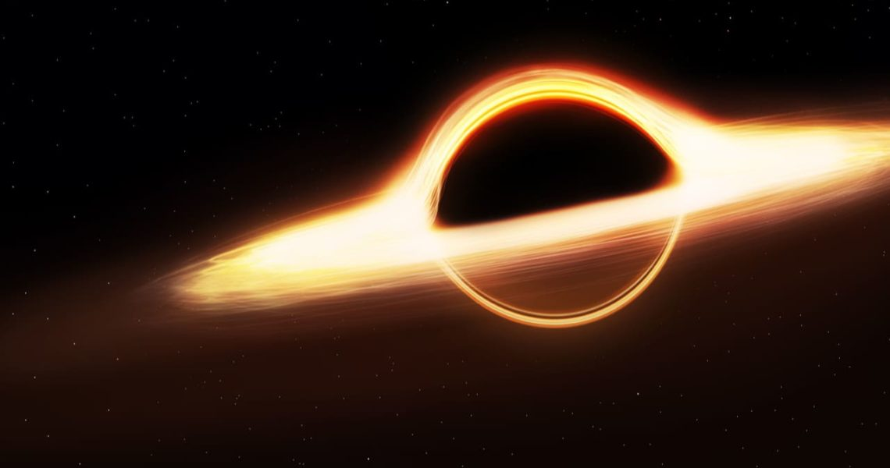

/stiːvən_ˈhɔːkɪŋ/ ( escuchar); Oxford, 8 de enero de 1942-Cambridge, 14 de marzo de 2018)23fue un físico teórico, astrofísico, cosmólogo y divulgador científico británico.
Sus trabajos más importantes consistieron en aportar, junto con Roger Penrose, teoremas respecto a las singularidades espaciotemporales en el marco de la relatividad general y la predicción teórica de que los agujeros negros emitirían radiación,4 lo que se conoce hoy en día como radiación de Hawking (o a veces radiación Bekenstein-Hawking).
Una de las principales características de su personalidad fue su contribución al debate científico, a veces apostando públicamente con otros científicos.
El caso más conocido es su participación en la discusión sobre la conservación de la información en los agujeros negros.5
Era miembro de la Real Sociedad de Londres, de la Academia Pontificia de las Ciencias y de la Academia Nacional de Ciencias de Estados Unidos.

TON618
Agujero hiper luminoso
Quasar
Galaxia recien nacdida
Fue titular de la Cátedra Lucasiana de Matemáticas (Lucasian Chair of Mathematics) de la Universidad de Cambridge desde 1979 hasta su jubilación en 2009.
6
Entre las numerosas distinciones que le fueron concedidas, recibió doce doctorados honoris causa y fue galardonado con la Orden del Imperio Británico (grado CBE) en 1982, el Premio Príncipe de Asturias de la Concordia en 1989, la Medalla Copley en 2006, la Medalla de la Libertad en 20097 y el Premio Fundación BBVA Fronteras del Conocimiento en 2015.
Estuvo casado en dos ocasiones y tuvo tres hijos.